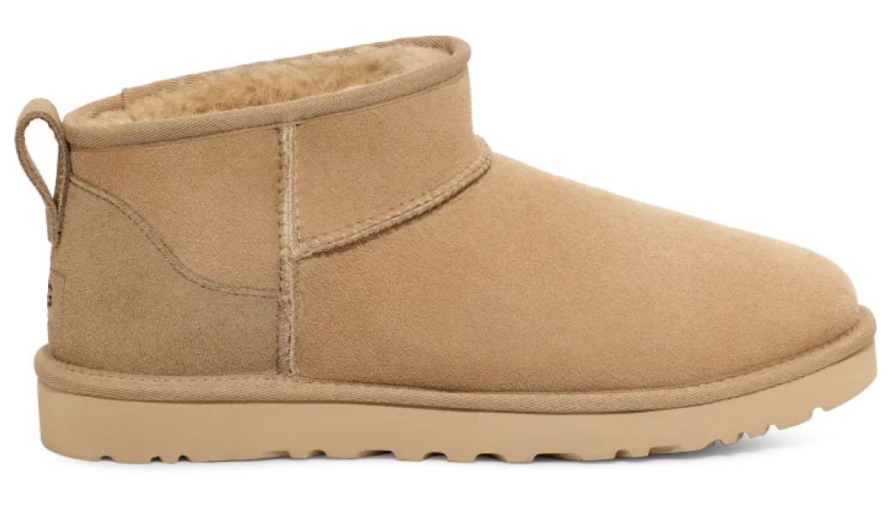

UGG Classic Ultra Mini Boot
Chestnut (Women's)
История компании UGG началась в 1978 году, когда Брайан Скун и Джефф Грин основали компанию в Канаде. Их первоначальная идея заключалась в создании высококачественной обуви из овчины для спортсменов и активного отдыха. В течение первых нескольких лет UGG быстро завоевала популярность среди любителей активного отдыха, благодаря своей комфортной и стильной обуви.
Современный UGG Сегодня UGG является одним из самых узнаваемых и популярных брендов обуви в мире. Компания продолжает развивать и расширять свой ассортимент, предлагая обувь, одежду и аксессуары из различных материалов, включая искусственную овчину и другие синтетические материалы.
Несмотря на продолжающуюся критику со стороны защитников окружающей среды и животных, UGG продолжает развиваться и адаптироваться к новым требованиям и тенденциям. Компания также активно работает над улучшением условий труда своих работников и повышением экологической устойчивости своих производственных процессов.
О кроссах
Дата выхода
03/03/2023
Розничная цена
499€
Материалы
Замша, резина
Тебе понравится:

Adidas Campus 00s
Core Black

Jordan 1 Retro Low Golf
Travis Scott Neutral Olive